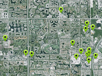

Searches for places where you can eat in a radius of 5 km from the specified coordinates, creating markers for these places, showing them on the map, and displays the name and coordinates of these locations in the console.
Requirement: Google API Key
Usage instructions:
In the script, specify your Google API Key.
Add this script to map GameObject.
In the console, you will see the name and coordinates of place locations.
In the script, specify your Google API Key.
Add this script to map GameObject.
In the console, you will see the name and coordinates of place locations.
FindPlacesExample.cs
/* INFINITY CODE 2013-2016 */
/* http://www.infinity-code.com */
using System.Collections.Generic;
using UnityEngine;
namespace InfinityCode.OnlineMapsExamples
{
[AddComponentMenu("Infinity Code/Online Maps/Examples (API Usage)/FindPlacesExample")]
public class FindPlacesExample : MonoBehaviour
{
private void Start()
{
OnlineMapsFindPlaces.FindNearby(
new Vector2(151.1957362f, -33.8670522f),
5000,
"ADD YOUR OWN KEY HERE", // <----------------------------- Google API Key
null,
null,
"food").OnComplete += OnComplete;
}
private void OnComplete(string s)
{
OnlineMapsFindPlacesResult[] results = OnlineMapsFindPlaces.GetResults(s);
if (results == null)
{
Debug.Log("Error");
Debug.Log(s);
return;
}
List<OnlineMapsMarker> markers = new List<OnlineMapsMarker>();
foreach (OnlineMapsFindPlacesResult result in results)
{
Debug.Log(result.name);
Debug.Log(result.location);
OnlineMapsMarker marker = OnlineMaps.instance.AddMarker(result.location, result.name);
markers.Add(marker);
}
Vector2 center;
int zoom;
OnlineMapsUtils.GetCenterPointAndZoom(markers.ToArray(), out center, out zoom);
OnlineMaps.instance.position = center;
OnlineMaps.instance.zoom = zoom + 1;
}
}
}